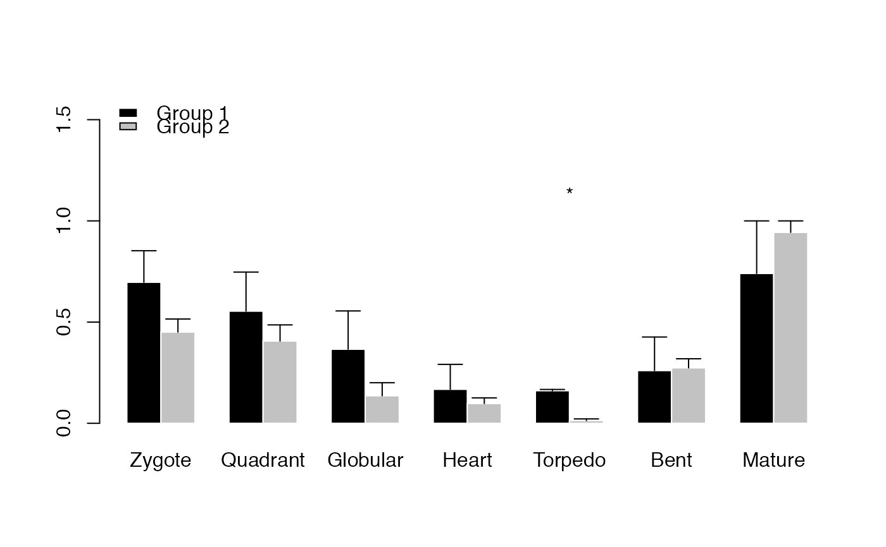
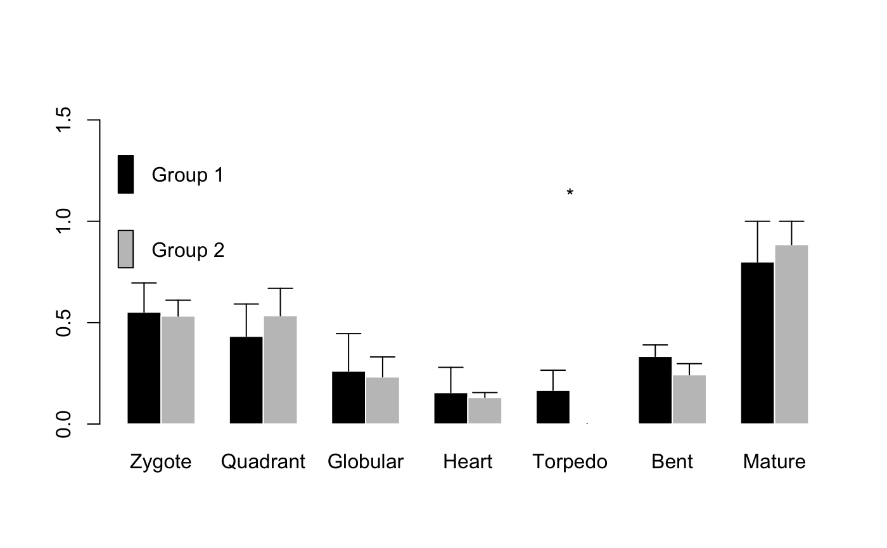
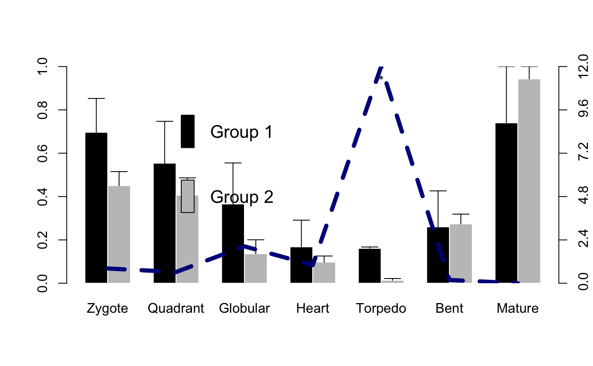

This function takes a PhyloExpressionSet or DivergenceExpressionSet object as input and computes
for two or more defined phylostratum (divergence stratum) classes the statistical significance of
the differences of mean relative expression of these two (or more) corresponding phylostratum (divergence stratum) classes.
As test-statistic, the function performs a nonparametric kruskal.test
based on relative expression values stored within each defined phylostratum class.
PlotBarRE( ExpressionSet, Groups = NULL, wLength = 0.1, ratio = FALSE, p.adjust.method = NULL, ... )
| ExpressionSet | a standard PhyloExpressionSet or DivergenceExpressionSet object. |
|---|---|
| Groups | a list containing the phylostrata or divergence-strata that correspond to the same phylostratum class or divergence class.
For ex. evolutionary old phylostrata: PS1-3 (Class 1) and evolutionary young phylostrata: PS4-12 (Class 2).
In this case, the |
| wLength | a numeric value defining the whiskers length above the bars. In case there are numerous different phylostratum classes
a smaller |
| ratio | a boolean value specifying whether the bars in the barplot represent the
mean relative expression level of phylostrata belonging to the same phylostratum class.
In case |
| p.adjust.method | correction method to adjust p-values for multiple comparisons (see |
| ... | default graphics parameters. |
A barplot comparing Phylostratum-Classes by its mean relative expression levels. Significant stages are marked by '*' referring to statistically significant differences:
(1) '*' = P-Value <= 0.05
(2) '**' = P-Value <= 0.005
(3) '***' = P-Value <= 0.0005
In case a large number of developmental stages is included in the input ExpressionSet,
p-values returned by PlotBarRE should be adjusted for multiple comparisons which can be done
by specifying the p.adjust.method argument.
Quint M et al. 2012. "A transcriptomic hourglass in plant embryogenesis". Nature (490): 98-101.
Domazet-Loso T. and Tautz D. 2010. "A phylogenetically based transcriptome age index mirrors ontogenetic divergence patterns". Nature (468): 815-818.
Myles Hollander and Douglas A. Wolfe (1973), Nonparametric Statistical Methods. New York: John Wiley & Sons. Pages 115-120.
Hajk-Georg Drost
# read standard phylotranscriptomics data data(PhyloExpressionSetExample) data(DivergenceExpressionSetExample) # example PhyloExpressionSet PlotBarRE(ExpressionSet = PhyloExpressionSetExample, Groups = list(c(1:3), c(4:12)))# example DivergenceExpressionSet PlotBarRE(ExpressionSet = DivergenceExpressionSetExample, Groups = list(c(1:5), c(6:10)))# Perform PlotBarRE() with p-value adjustment method Benjamini & Hochberg (1995) PlotBarRE(ExpressionSet = PhyloExpressionSetExample, Groups = list(c(1:3), c(4:12)), p.adjust.method = "BH")# Example: plot ratio # the ratio curve visualizes the ratio between bar 1 / bar 2 # the z - axis shows the corresponding ratio value of bar 1 / bar 2 PlotBarRE(ExpressionSet = PhyloExpressionSetExample, Groups = list(c(1:3), c(4:12)), ratio = TRUE)